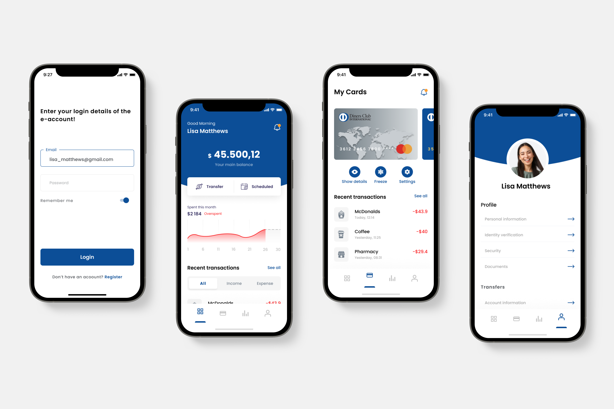

Context
Diners Club is a renowned global credit card company. With the rapid growth of mobile usage and the increasing popularity of mobile banking, Diners Club realized the need to revamp its existing mobile app to provide a smooth and intuitive user experience. The goal was to improve customer satisfaction and increase engagement.
Problem statement
The existing Diners Club mobile app lacked an intuitive and user-friendly interface, resulting in poor user engagement and subpar user experience. Users found it difficult to navigate through the app, access their account information, and perform transactions efficiently. This led to frustration and a decline in overall customer satisfaction.
Challenge
The primary challenge was to redesign the Diners Club app to provide a modern and intuitive user experience while maintaining the brand's identity. The app needed to cater to a wide range of user demographics, including both tech-savvy and less tech-savvy customers. Additionally, it was crucial to address security concerns and ensure that sensitive financial information remained protected.
My role
During the Diners Club app redesign, I was responsible for the experience strategy and design of the iOS app. From November 2018 to March 2019, I took charge of the UX work, producing all major deliverables and presenting them to the client. Throughout the project, I collaborated closely with a UX Architect who specialised in designing the Android app, ensuring effective teamwork and coordination.
The approach
To tackle the challenge at hand, I followed a user-centred design approach, which involved conducting user research, gathering insights, and iteratively designing and testing prototypes.
Discovery
Through user interviews, surveys, and usability tests I gained a deep understanding of the pain points and expectations of Diners Club app users. After analysing the data, I identified common patterns in order to compile a list of key issues that needed addressing.
RESEARCH PROCESS
- Recruitment: We aimed for a diverse sample of Diners Club app users to ensure we captured insights from various demographics. Our sample consisted of 50 participants, ranging from tech-savvy individuals to less tech-savvy users. To recruit participants, we used a mix of methods, including in-app surveys and online recruitment platforms.
RESEARCH METHOD
- User interviews: We conducted semi-structured interviews, allowing for open-ended discussions and follow-up questions to gain a deeper understanding of users experiences, pain points, and expectations related to the Diners Club app.
- Surveys: We designed and sent online surveys to gather quantitative data on user preferences, satisfaction levels, and specific pain points. The surveys included Likert scale questions, multiple-choice questions, and open-ended questions for participants to provide detailed feedback.
- Usability tests: To evaluate the usability of the existing app, we conducted usability tests with representative tasks. Participants were observed while performing tasks related to account management, transactions, and accessing specific features. This allowed us to identify specific pain points and areas of improvement.
- Competitive analysis: We conducted a competitive analysis to gain insights into industry best practices and benchmark the Diners Club app against other mobile banking and credit card apps. This helped us identify areas where the app fell short and opportunities for improvement.
DATA ANALYSIS
- The data collected from interviews, surveys, and usability tests were analysed using qualitative and quantitative analysis techniques. Qualitative data from interviews and open-ended survey responses were coded and categorised to identify common themes and patterns. Quantitative data from surveys were analysed using statistical methods to identify trends and calculate metrics such as satisfaction scores.
Growth areas before revamp
- Users found the app's registration process long and confusing, with too many steps and unclear instructions. They expected a simplified and streamlined onboarding experience.
- Users struggled to find specific features and navigate through different sections of the app. The existing navigation structure was complex and lacked clear visual cues, leading to frustration. Users expected a more intuitive and easily accessible navigation system.
- Users expressed the need for better visibility into their account information, such as available credit, recent transactions, and payment due dates. They desired more control over their accounts, including the ability to set spending limits and receive real-time notifications.
- Users found the transaction process cumbersome and time-consuming. They wanted a more straightforward and intuitive flow, with clear instructions and visual feedback at each step.
- Users were concerned about the security of their financial information. They expected strong security measures, such as two-factor authentication to protect their sensitive data.
- Users desired a personalised experience that catered to their specific needs and preferences. They expected personalised recommendations, offers, and tools to help them track their spending and manage their finances effectively.
Persona: Lisa, the financial manager
The solution

- Simplified the app's registration process by minimizing steps and providing clear instructions, ensuring a smooth onboarding experience for new users.
- Redesigned the app's navigation hierarchy, adopting a bottom tab bar pattern for easy access to core features. Implemented contextual menus and clear visual cues to help users quickly navigate through different sections.
- Introduced a personalised dashboard displaying relevant account information, such as available credit, recent transactions, and payment due dates. Users could easily manage their accounts, set spending limits, and receive real-time notifications.
- Refined the transaction process by reducing steps and incorporating clear and concise instructions. Implemented visual feedback and confirmation screens to instill confidence in users during transactions.
- Strengthened app security by implementing two-factor authentication, and biometric login options.
- Introduced personalized recommendations and offers based on user spending patterns and preferences. Integrated budgeting tools and expense categorisation features to help users track their spending and manage their finances effectively.
Impact
- The redesigned Diners Club app had a significant impact on both user satisfaction and business metrics.
- The app's average daily active users increased by 40%, showcasing improved engagement and user retention.
- Transactions performed through the app witnessed a 25% increase, indicating improved ease of use and customer trust.
Reflections
I had the opportunity to learn and grow. This experience gave me valuable insights and lessons that have shaped my understanding of user-centered design and mobile app development.
USER RESEARCH IS IMPORTANCE
Conducting thorough user research was fundamental in understanding the pain points and expectations of Diners Club app users. The insights gathered, played a crucial role in driving the redesign decisions and ensuring a user-centered approach.
BRAND IDENTITY
Redesigning the app while maintaining the brand's identity was a delicate balance. I learned the importance of finding creative solutions that not only improved the user experience but also stayed true to the brand's aesthetics and values. Iterative design and feedback loops helped achieve this balance effectively.
COLLABORATION AND TEAMWORK
Collaborating closely with a UX Architect specialized in Android app design taught me the importance of teamwork and effective communication. Working together allowed us to leverage our individual strengths and ensure consistency across platforms while tailoring the user experience to the specific requirements of each operating system.
ITERATIVE DESIGN AND USER TESTING
The iterative design process, coupled with user testing, proved to be crucial in refining the app's user experience. Testing prototypes with real users and incorporating their feedback helped identify pain points, uncover usability issues, and make informed design decisions to improve the app's overall usability.
PERSONALIZATION
Understanding the importance of personalization in today's digital landscape was a key takeaway. Offering tailored recommendations, personalized offers, and customizable features not only improved the user experience but also fostered a sense of ownership and satisfaction among users.
CONTINUOUS IMPROVMENT
The launch of the redesigned app was just the beginning. I learned the importance of collecting user feedback, analyzing app analytics, and continuously iterating on the design to address evolving user needs and preferences. Embracing a mindset of continuous improvement allows the app to stay relevant and provide an exceptional user experience in a rapidly changing technological landscape.